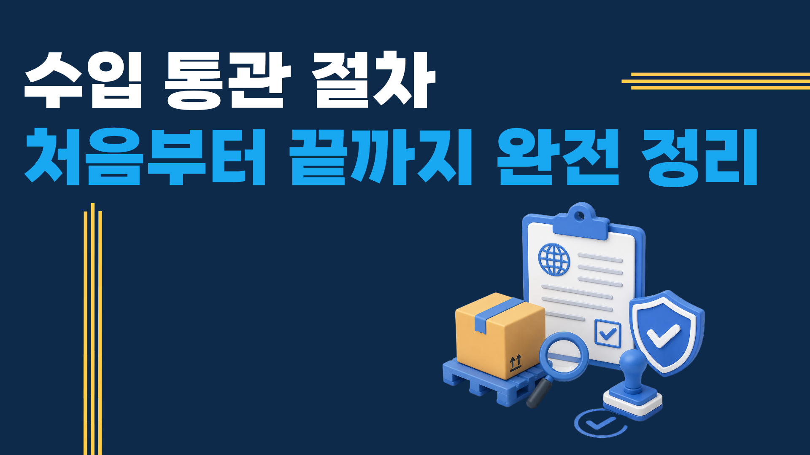

수입 통관, 왜 어렵게 느껴질까?
중국에서 물건을 처음 수입하는 분들이 가장 어렵게 느끼는 부분이 통관입니다. 낯선 용어(HS코드, B/L, 인보이스 등), 관세 계산, 세관 서류 준비가 복잡하게 느껴집니다. 하지만 흐름을 한 번 이해하면 그리 어렵지 않습니다.
이 글에서는 중국 수입 통관의 전체 과정을 처음 해보는 분들도 이해할 수 있는 언어로 단계별로 정리했습니다.
통관에 꼭 나오는 용어 정리
| 용어 | 의미 |
|---|---|
| HS코드 (HTS Code) | 품목을 분류하는 국제 번호. 관세율 결정의 기준 |
| 인보이스 (Commercial Invoice) | 화물 내용, 수량, 금액이 기재된 거래 명세서 |
| B/L (Bill of Lading) | 해상 운송 선하증권. 화물 소유권 증명 서류 |
| AWB (Air Waybill) | 항공화물 운송장. B/L의 항공 버전 |
| 패킹 리스트 | 박스별 포장 내용·수량·중량 목록 |
| 원산지증명서 (C/O) | FTA 관세 혜택 적용을 위한 원산지 증명 서류 |
중국 수입 통관 단계별 절차
1단계 — 수입 신고 (Import Declaration)
화물이 한국 항구(인천항, 부산항 등)에 도착하면 관세사가 세관에 수입 신고를 합니다. 이때 상업 인보이스, 패킹 리스트, B/L이 기본 서류로 제출됩니다. 신고 전에 HS코드를 정확히 결정해야 합니다.
2단계 — HS코드 분류 및 관세율 확인
HS코드는 10자리 숫자로 화물 품목을 분류합니다. 코드에 따라 관세율(0~수백%)이 결정됩니다. 같은 제품도 HS코드 해석에 따라 관세가 크게 달라질 수 있어, 발송 전에 미리 확인하는 것이 중요합니다.
3단계 — 관세 및 부가세 납부
수입 신고 후 관세와 부가가치세(10%)를 납부합니다. FTA 원산지증명서가 있으면 한·중 FTA 협정세율(0~5%)을 적용받아 관세를 크게 줄일 수 있습니다. 원산지증명서는 중국 공급업체에게 미리 요청해야 합니다.
4단계 — 세관 검사 (필요 시)
세관은 신고 내용과 실제 화물이 일치하는지 확인하기 위해 물품 검사를 실시할 수 있습니다. 검사 대상은 무작위 또는 고위험 품목으로 지정됩니다. 검사 시 1~3일 추가 소요됩니다.
5단계 — 통관 완료 및 반출
관세 납부와 검사가 완료되면 화물이 반출됩니다. 국내 배송은 수하인 주소지까지 포워더가 연결해줍니다.
FTA 활용으로 관세 줄이기
한국과 중국은 한·중 FTA(2015년 발효)를 체결해 대부분의 중국산 상품에 대해 협정세율을 적용받을 수 있습니다. 원산지증명서(C/O)를 제출하면 일반 관세의 0~5%로 줄어드는 경우가 많습니다.
원산지증명서는 중국 공급업체에게 사전에 요청해야 하며, 선적 전에 준비되어야 합니다. 투삼로지스는 FTA 적용 가능 여부와 원산지증명서 발급 지원 서비스를 제공합니다.
통관 직접 처리하는 투삼로지스
투삼로지스는 관세사와 직접 협력해 수입 통관을 처리합니다. HS코드 사전 확인, FTA 적용 검토, 서류 대행까지 원스톱으로 제공합니다. 통관 지연이나 문제가 발생하면 즉시 대응합니다.
자주 묻는 질문
- 수입 통관을 직접 할 수 있나요?
- 개인도 직접 수입 신고가 가능하지만, HS코드 분류와 서류 작성이 복잡합니다. 대부분은 포워더 또는 관세사에게 대행을 맡기는 것이 안전합니다.
- 중국 수입 시 관세는 얼마나 내나요?
- 품목별로 다릅니다. 일반적으로 0~8% 수준이지만, 일부 품목은 높은 세율이 적용됩니다. FTA 원산지증명서 적용 시 대부분 0~5%로 낮아집니다. HS코드를 알려주시면 세율을 미리 확인해드립니다.